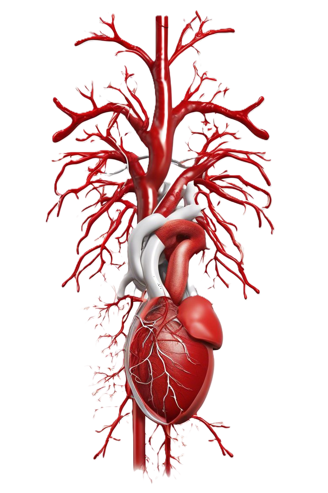

Presentació assignatura
La Biomedicina és una assignatura optativa anual de batxillerat, recomanada per a estudiants interessats en els estudis biosanitaris, tot i que és accessible per a tots els alumnes. Aquesta matèria s'estructura a partir de coneixements de Biologia i Geologia i s'enfoca en la salut i la malaltia. L'estudi de la Biomedicina explora aspectes biològics de la medicina, incloent-hi factors genètics, cel·lulars, bioquímics i moleculars del cos humà, així com malalties potencials.
L'objectiu no és comprendre totes les funcions de l'organisme o les malalties possibles, sinó més aviat obtenir competències específiques mitjançant l'estudi de casos reals o versemblants al llarg del curs. Aquests casos s'analitzen en grups de treball autònoms, explorant aspectes cel·lulars, fisiològics o genètics, les alteracions derivades d'alguna afectació i les teràpies aplicades.
La matèria està dividida en cinc blocs: el primer se centra en l'estudi de la sang; el segon, en el sistema nerviós; el tercer, en el sistema immune; el quart, en el desenvolupament sexual de les persones; i el cinquè, en el càncer. Cada bloc incideix en l'aplicació integrada dels aprenentatges assolits, les problemàtiques de les funcions vitals de l'organisme humà, la comprensió dels processos biològics que sustenten l'estat de salut i les seves alteracions, el coneixement de teràpies modernes i valoracions ètiques.
optativa anual de batxillerat, recomanada per a estudiants interessats en els estudis biosanitaris, tot i que és accessible per a tots els alumnes. Aquesta matèria s'estructura a partir de coneixements de Biologia i Geologia i s'enfoca en la salut i la malaltia. L'estudi de la Biomedicina explora aspectes biològics de la medicina, incloent-hi factors genètics, cel·lulars, bioquímics i moleculars del cos humà, així com malalties potencL'objectiu no és comprendre totes les funcions de l'organisme o les malalties possibles, sinó més aviat obtenir competències específiques mitjançant l'estudi de casos reals o versemblants al llarg del curs. Aquests casos s'analitzen en grups de treball autònoms, explorant aspectes cel·lulars, fisiològics o genètics, les alteraderivades d'alguna afectació i les teràpies aplicades.
La matèria està dividida en cinc blocs: el primer se centra en l'estudi de la sang; el segon, en el sistema nerviós; el tercer, en el sistema immune; el quart, en el desenvolupament sexual de les persones; i el cinquè, en el càncer. Cada bloc incideix en l'aplicació integrada dels aprenentatges assolits, les problemàtiques de les funcions vitals de l'organisme humà, la comprensió dels processos biològics que sustenten l'estat de salut i les seves alteracions, el coneixement de teràpies modernes i valoracions ètiques.